¿Cómo ser un ganador constante en las Lotería?
y trucos de los expertos para ganar en las loterias
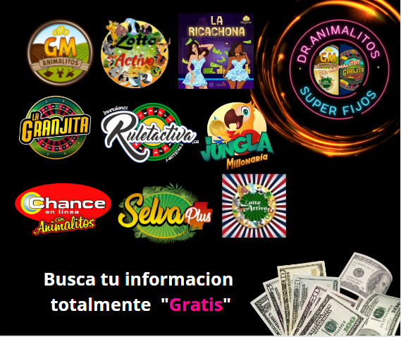
La mejor apuesta del dia
Ganar la lotería es algo que, con mucha suerte, puede pasar una vez en la vida. Quizá dos, pero eso ya es tener mucha suerte. O, además de suerte, pueden influir algunos ‘trucos’. Richard Lustig, fallecido en 2018, fue todo un experto en esta suerte, pues ganó hasta siete premios de una cuantía importante entre 1993 y 2010.
Con ellos ganó más de un millón de dólares y, desde su experiencia y conocimientos, lanzó el libro ‘Aprenda cómo aumentar sus posibilidades de ganar la lotería’, en el que enseña su método. Como indica no todo es cuestión de suerte, aunque es el factor que más influye en los juegos de azar. Junto con ella, son varios los consejos a seguir para incrementar las posibilidades de éxito.El primero de estos consejos es evidente: a mayor número de boletos, más opciones hay de ganar. Si bien no lo garantiza, aumenta las opciones, pese a la fuerte inversión inicial que se pueda llegar a hacer. Es importante tener un control de lo que se lleva jugado y no destinar a estos premios un dinero pensado para el día a día.
La importancia de los números que elegimos
A la hora de elegir qué números escogemos, el experto recomendaba en su libro no seleccionar números consecutivos. En sorteos tipo Euromillones, con cinco números a elegir hasta el 50, la suma de todos debe estar entre los 104 y 176. “Los estudios han demostrado que el 70% de los premios gordos de lotería tienen sumas que caen en este rango”, explica.
Asimismo, no se debe elegir un número que esté dentro del mismo grupo (decena, centena) o que terminen con el mismo dígito. Siguiendo con los números, expone que, con el fin de aumentar la posibilidad de no compartir el premio, elegir números por encima del 31. El motivo, que muchas personas apuestan como terminación por el día de su cumpleaños. Para finalizar, recuerda que todo número, por más ‘feo’ o ‘bonito’ que sea, tiene las mismas opciones de resultar premiado.
"Saber dónde jugar"
Lustig recomienda apostar por juegos de lotería menos populares, pues esto implicará menos jugadores y, por tanto, menos competencia. Aunque el premio final pueda ser menor, las opciones de ganarlo se incrementan. Junto con ello, es importante jugar en aquellos donde hay una menor cantidad de números en el bombo del sorteo. Recomienda juegos de ámbito más local o estatal en lugar de nacional.
Por último, aconseja la creación de una peña de loterías con el que obtener dinero de los propios jugadores. Así se consiguen más números en la participación del sorteo, por lo que se incrementan las opciones de ganar de todos los que lo forman. La desventaja, apunta, es que “tendrás que compartir el bote con muchas personas”. Algo que puede no importar mucho si se consigue una alta cantidad a repartir entre pocas personas.


La mejor apuestas del dia
Lotería recomendada para jugar hoy
Tomando como referencia los tres animalitos más calientes para jugar el dia de hoy.
"Esta información es totalmente gratis"
Trabajamos solo con loterías legalmente registradas bajos las leyes y reglamentos de la Comisión Nacional de Lotería. (CONALOT) Misión: Garantizar al público apostador la transparencia y confiabilidad de la actividad de juegos de lotería; así como la debida inversión de los recursos obtenidos por la explotación de la actividad, por parte de las Instituciones Oficiales de Beneficencia Pública, en planes y programas de interés colectivo para el fortalecimiento de la sociedad venezolana. Visión: Ser reconocida como una institución de vanguardia, con un modelo de gestión eficaz, que transforme el mercado de Juegos de Lotería en Venezuela, en un sector evolutivo, transparente, confiable y socialmente responsable.
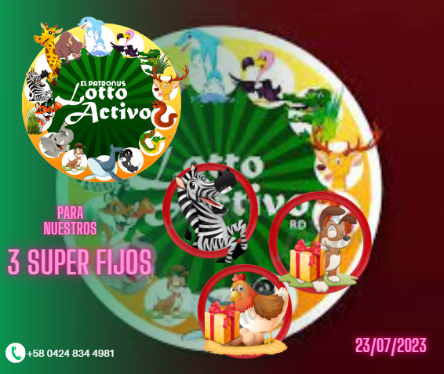
La mejor apuesta del dia
Nuestro Metodo de Trabajo
Buen día estimados saludos y muchas bendiciones, para trabajar con su servidor "Dr. Animalitos" solo cancelé la información de su lotería favorita, para recibir los 3 superfijos del día.
- Trabajamos con 2 informaciones por día.
- Turno de la mañana información para jugar de 9am a 1pm.
- Turno de la tarde información para jugar de 4pm a 8pm.
- La información se cancela de la siguiente manera.
- Pago móvil.
- Transferencias bancarias.
- Para mas informacion al +58 424 834 4981.
Información de los Animalitos
Los animalitos más calientes para el dia de hoy.
Aquí podrías encontrar la mejor orientación para el juego de las loterías y de los animalitos
El mejor análisis basados en estadísticas los mejores calculo con mucho profesionalismo para todos ustedes.
"Esta información es totalmente gratis"
Trabajamos solo con loterías legalmente registradas bajos las leyes y reglamentos de la Comisión Nacional de Lotería. (CONALOT) Misión: Garantizar al público apostador la transparencia y confiabilidad de la actividad de juegos de lotería; así como la debida inversión de los recursos obtenidos por la explotación de la actividad, por parte de las Instituciones Oficiales de Beneficencia Pública, en planes y programas de interés colectivo para el fortalecimiento de la sociedad venezolana. Visión: Ser reconocida como una institución de vanguardia, con un modelo de gestión eficaz, que transforme el mercado de Juegos de Lotería en Venezuela, en un sector evolutivo, transparente, confiable y socialmente responsable.
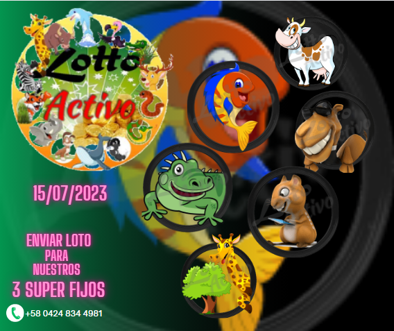
Ver Informacion
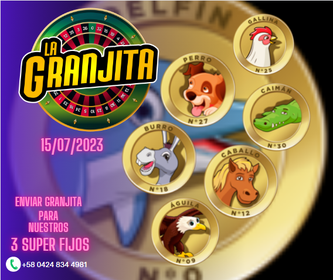
Ver Informacion
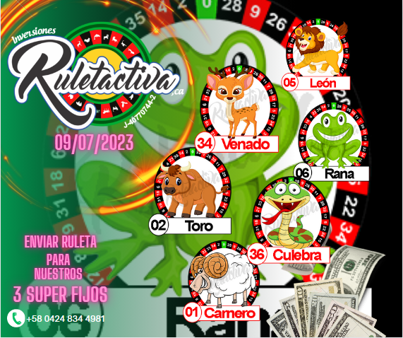
Ver Informacion
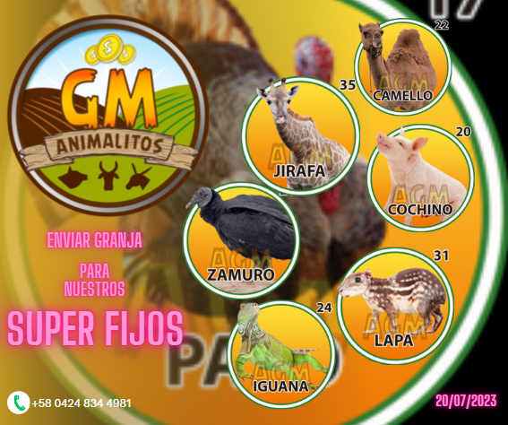
Ver Informacion
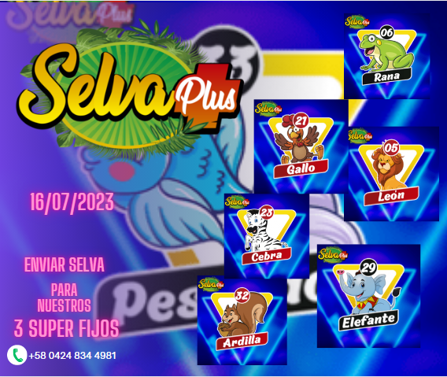
Ver Informacion
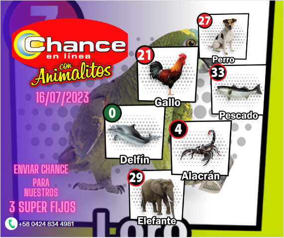
Ver Informacion
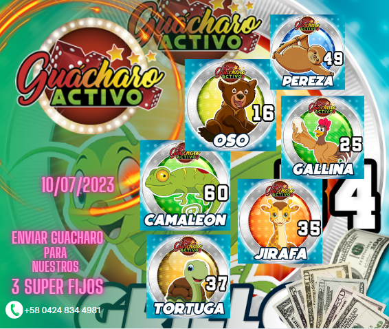
Ver Informacion
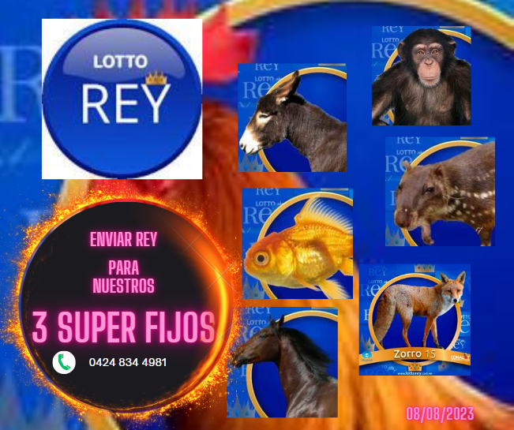
Ver Informacion
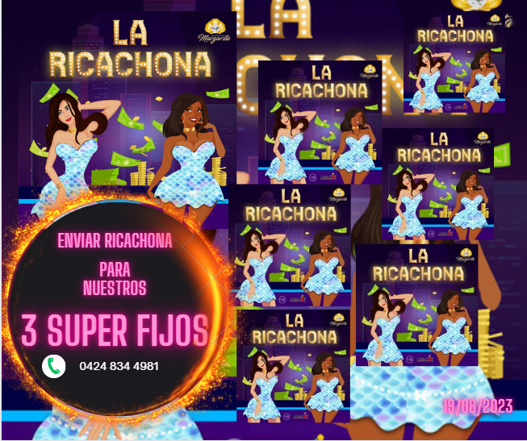
Ver Informacion
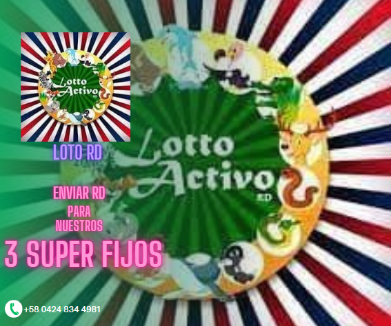
Ver Informacion
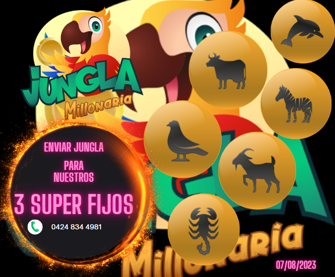
Ver Informacion
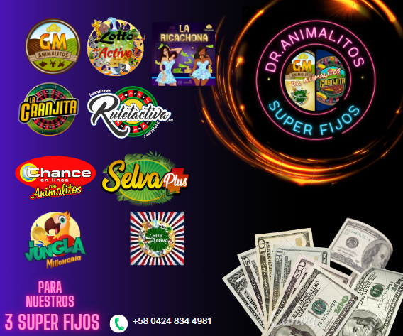
Loterias
Parley Millonario
Información para tu Parley Millonario
Los logros más calientes para el dia de hoy.
Aquí podrías encontrar la mejor orientación para tu parley
El mejor análisis basados en estadísticas los mejores calculo con mucho profesionalismo para todos ustedes.
Las apuestas deportivas en un sitio web es de mucha utilidad para todo lo referente a las apuestas deportivas online. Tratamos de colaborar en el éxito de pronósticos para todo tipo de apostantes, con un fuerte enfoque en las apuestas del deporte.
"Esta información es totalmente gratis"
Realice sus apuestas, solo con casas de apuestas legalmente registradas bajos las leyes y reglamentos de la Comisión Nacional de Lotería. (CONALOT) Misión: Garantizar al público apostador la transparencia y confiabilidad de la actividad de juegos de lotería; así como la debida inversión de los recursos obtenidos por la explotación de la actividad, por parte de las Instituciones Oficiales de Beneficencia Pública, en planes y programas de interés colectivo para el fortalecimiento de la sociedad venezolana. Visión: Ser reconocida como una institución de vanguardia, con un modelo de gestión eficaz, que transforme el mercado de Juegos de Lotería en Venezuela, en un sector evolutivo, transparente, confiable y socialmente responsable.
Guía de apuestas deportivas: consejos para apostadores principiantes y experimentados
Las apuestas deportivas bien podrían remontarse a más de dos siglos atrás. Lo cierto es que el siglo XXI ha sido probablemente el principal testigo de la gran explosión de este fenómeno.
Por supuesto que el notable crecimiento y la expansión de Internet constituyen un factor clave en el progreso y la evolución de las apuestas deportivas, las cuales forman parte de un mundillo que cuenta cada vez con una mayor cantidad de adeptos.
Este espacio propone una guía en la que se mencionarán los temas básicos de apuestas, se expondrán algunos consejos para apostadores, tanto principiantes como experimentados, y se enumerarán los contenidos a desarrollar.
El primer paso
Para empezar a apostar, naturalmente, hay que registrarse en una casa de apuestas. Y si bien pareciera ser sólo completar unos datos y hacer un depósito de dinero, lo más recomendable siempre es explorar todo lo posible con relación a cada una de las alternativas. Esto permitirá conocer el reglamento de cada operador, las opciones de pago y retiro de dinero, asuntos relativos al Juego Responsable y otros puntos. Más allá del fútbol, pasión de multitudes en todo el planeta, este manual repasará cómo apostar en otros tantos deportes. Algunos también populares como el tenis, el baloncesto, las carreras de caballos y el cricket. Otros, no tanto, denominados minoritarios, como el snooker, los dardos y el golf, entre otros. Escuela de apuestas Su nombre lo dice todo. Este proyecto tiene el objetivo de enseñar, instruir y explicar todas las cuestiones que giran en torno a las apuestas deportivas, directa e indirectamente. La idea es ir de menor a mayor, comenzando con cuestiones elementales como el propio concepto de “apuestas deportivas”, las cuotas, las casas de apuestas y aquellas ofertas que las compañías lanzan para dar la bienvenida a los nuevos usuarios. A continuación, se explicarán y analizar los diferentes tipos de apuestas deportivas, haciendo hincapié en el deporte más popular del mundo en la actualidad: el fútbol. En ese sentido, se recorrerán los tipos de apuestas de fútbol, las apuestas de fútbol en vivo, las apuestas con hándicap, las antepost y más. Paralelamente, estos temas serán apoyados por estrategias, consejos y ejemplos, cuidadosamente elegidos para facilitar la comprensión del lector.Los caminos al éxito
Ganar en las apuestas deportivas no es una tarea para nada sencilla. Cada jugador cuenta con su propia ideología; sus estrategias, sus sistemas y sus tácticas, que varían según las circunstancias. En este aspecto, es fundamental aprender qué es el stake en las apuestas e indagar en diversos planes y métodos al respecto. Un punto importante tiene que ver con el análisis previo que se lleva a cabo en función de la apuesta que se planea realizar. El estudio de estadísticas y la investigación en general es esencial para incrementar las posibilidades de éxito. Y así como se puede ganar, se puede perder. Suena obvio y lógico, pero no saber perder puede desencadenar en un problema aún mucho mayor que la propia derrota. Esto hay que tenerlo claro, por ello existen determinados tips para evitar errores y tácticas que ayudan a sobrellevar una racha adversa.Ganar, una cuestión de estudio y lucidez
Principiantes y experimentados deben asumir, ante todo, que las casas de apuestas siempre tienen las de ganar. Frente a semejante ventaja, resulta determinante no dar todavía más ventajas mediante errores evitables. En esta guía de apuestas deportivas se intentará precisamente eso: que el apostante se acerque a la victoria a través de consejos útiles e información consistente. Esta sección contiene los temas más importantes para iniciarse en el mundo de las apuestas deportivas y entender las diversas modalidades para apostar.Loterias
Los terminales mas calientes del dia.
Información para los terminales de hoy
Aquí podrías encontrar la mejor orientación para el juego de las loterías
El mejor análisis basados en estadísticas los mejores calculo con mucho profesionalismo para todos ustedes.
"Esta información es totalmente gratis"
Trabajamos solo con loterías legalmente registradas bajos las leyes y reglamentos de la Comisión Nacional de Lotería. (CONALOT) Misión: Garantizar al público apostador la transparencia y confiabilidad de la actividad de juegos de lotería; así como la debida inversión de los recursos obtenidos por la explotación de la actividad, por parte de las Instituciones Oficiales de Beneficencia Pública, en planes y programas de interés colectivo para el fortalecimiento de la sociedad venezolana. Visión: Ser reconocida como una institución de vanguardia, con un modelo de gestión eficaz, que transforme el mercado de Juegos de Lotería en Venezuela, en un sector evolutivo, transparente, confiable y socialmente responsable.
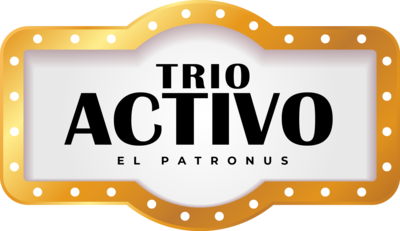
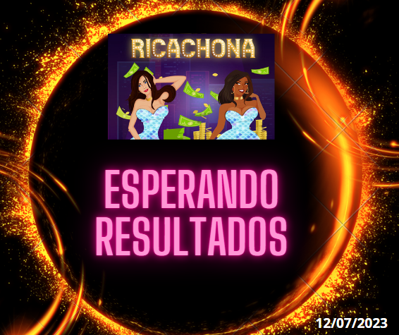
Terminal La Ricachona
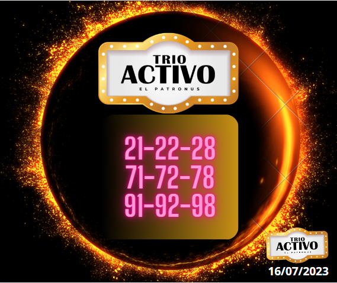
Terminal Trio Activo
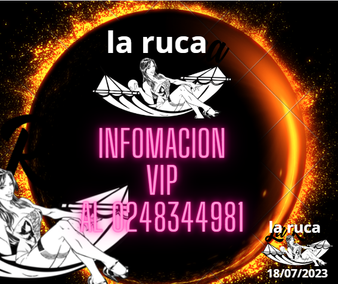
Terminal La Ruca
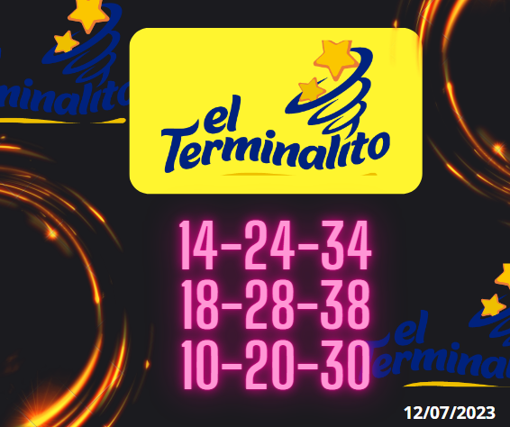
Terminal el Terminalito
5 consejos para principiantes que quieren jugar a la lotería
Aunque en Estados Unidos son millones de personas las que juegan a la lotería (prácticamente a diario), lo cierto es que en las últimas semanas, tras el magno sorteo del Mega Millions y quizá la inestabilidad económica que se vive en la actualidad, ha habido un incremento en el interés de los juegos de azar
Las probabilidades de ganar la lotería es una entre miles y miles, cifra que puede aún incrementarse dependiendo del juego que se elija. Es por ello que algunos expertos en lotería recomiendan ejecutar ciertas estrategias para así acercarte un poco más a la posibilidad de llevarte un premio.
Si eres novato o principiante en estos temas de lotería, aquí te dejamos algunos consejos que pueden ayudarte a jugar de mejor manera, aunque recuerda que no existe fórmula exacta para volverse ganador.
1) Elige un juego de lotería de “matriz fácil”
Si estás empezando en esto de lo lotería, lo primero que debes saber es que las loterías con “matriz de juego fácil” tienen más posibilidades de otorgar un premio de manera inesperada.¿A qué nos referimos con “matriz fácil”? Siempre hay una sola matriz de juego, limitada a 35-49 bolas. Esto determina en gran medida las probabilidades de la lotería.
2) Usar el multiplicador
La mayoría de los juegos de lotería de Estados Unidos tienen esta opción; sin embargo, muy pocos jugadores la utilizan. Esta opción puede aumentar todo tipo de premio, incluso por varios exponenciales. Por ejemplo, el multiplicador del Powerball, llamado Powerplay, aumenta los premios que no son premios mayores hasta 5 veces. Si el premio mayor es superior a $150 millones de dólares y hasta 10 veces si el premio mayor es inferior a $150 millones.En el caso del Mega Millions, la opción multiplicadora se denomina Megaplier, la cual aumenta los premios no principales hasta 5 veces. Los premios van desde $10 por el número mínimo de bolas acertadas hasta $5 millones.
3) Analiza premios que no sean los principales
Tomando en cuenta el punto del multiplicador, un premio mínimo de lotería podría transformarse en algo millonario. No importa qué tipo de premio te lleves, lo principal es la cantidad de divisiones del premio mayor de lotería que jugarás y los montos de los premios para cada una. Cuantas más divisiones de premios haya en el boleto, mayores serán las posibilidades de ganar cualquier premio.
4) No te olvides del número 3
Aquí hay otro consejo útil. Los jugadores de lotería aciertan de 1 a 3 números de lotería en casi todos los juegos. Ganas una pequeña cantidad si aciertas solo unos pocos números. Sin embargo, algunas loterías están dispuestas a pagar un buen dinero por solo 3 números acertados. Es más fácil alcanzarlos, así que busca la mejor oferta. Esta es una excelente opción para cualquiera que busque obtener un flujo de efectivo bajo pero constante.
5) Juega a la lotería en grupo
Cuantos más boletos de lotería compre, mayores serán sus posibilidades de ganar. Así que convence a amigos, familiares o vecinos para adquirir decenas de billetes en conjunto.
"Acerca de nosotros"
Dr. Animalitos. Es un Grupo de los mejores expertos que se dedica exclusivamente al análisis de las loterías, Brindándoles a nuestros usuarios la mejor orientación a la hora De hacer sus combinaciones.
"Método de Trabajo"
Dr. Animalitos. Trabajamos nuestra orientación en las loterías mediantes los mejores Análisis, estadísticas, cálculos y la mejor objetividad que nos caracteriza brindándoles a nuestros usuarios la mejor orientación a la hora de hacer sus combinaciones.
"Con que loterías Trabajamos"
Dr. Animalitos. Solo asesoramos a nuestros usuarios en aquellas loterías que están, totalmente legalizadas por las normas y leyes que rigen cada país. Dr. Animalitos. Nota: No recomendamos a nuestros usuarios Casa de apuestas para realizar sus combinaciones, ya que nuestro enfoque es solo a la de orientar a nuestros usuarios a la hora de realizar solos sus combinaciones. .
"Costo de la información"
Dr. Animalitos. La orientación sobre las loterías a nuestros usuarios es totalmente "Gratuita" por este medio. Esta totalmente prohibida su vente, no nos hacemos responsables del mal uso que se le dé, a nuestra orientación.